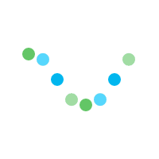

asticaDesign: Image Generation - Javascript Client API
asticaDesign: Image Generation - Javascript Client API
Explore:
asticaVision
asticaDesign
asticaListen
asticaVoice
asticaGPT

Loading
asticaDescribe - Image Generation API Usage:
<script src="https://astica.ai/javascript-sdk/2024-01-31/astica.api.js"></script>
<script>
asticaAPI_start('API KEY HERE'); //run at least once
//Example 1
asticaDesign_image('realistic neon cyberpunk cat', your_callback); //defaults to "faster" quality
//Example 2:
asticaDesign_image('realistic neon cyberpunk cat', "high", your_callback"); //specify "high" quality
//Example 4:
//advanced with parameters:
asticaDesign_image(
'2.0_full', //modelVersion: 2.0_full
'realistic neon cyberpunk cat', //Image Prompt
'', //Optional Negative Image Prompt
'standard', //generate quality
'0', //generate lossless
'1', //moderate
your_callback, //Your Custom Callback function
);
//Set Your Custom Callback Function
function your_callback(data) {
if(typeof data.error != 'undefined') {
alert(data.error);
} else {
console.log(data);
var image_url = data.output;
console.log("image URL:", image_url);
}
}
</script>